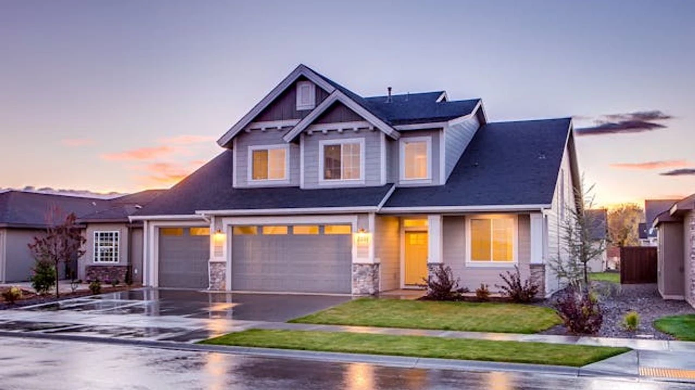

İşte Tokat'ta Satılık Konutların Amortisman Süreleri: O İlçede 44 Yıl
Kelkitgazetesi.com gayrimenkul piyasasındaki gelişmeleri yakından takip ederek, Tokat ve ilçelerindeki
satılık konutların geri dönüş sürelerini ortaya koydu.

Kelkitgazetesi.com bölgesel gayrimenkul piyasasındaki gelişmeleri yakından takip ederek, Tokat ili ve
ilçelerindeki satılık konutların geri dönüş sürelerini (amortisman süreleri) ortaya koydu. Yapılan
kapsamlı araştırma, Tokat'taki konut yatırımlarının Türkiye ortalamasından daha uzun sürdüğünü
gösteriyor.
Uzmanlar, "Tokat genelinde satılık konutların ortalama geri dönüş süresi 18 yıl. Bu, Türkiye genelindeki
ortalama 14 yılın üzerinde bir süre. Ancak ilçeler arasında farklılıklar var" diye belirtti.
Tokat İlçelerindeki Geri Dönüş Süreleri:
Reşadiye: 44 yıl
Erbaa: 20 yıl
Zile: 19 yıl
Turhal: 19 yıl
Reşadiye'deki 44 yıllık geri dönüş süresi, o bölgedeki konut yatırımlarının görece daha riskli olduğunu
gösteriyor. Erbaa, Zile ve Turhal gibi ilçelerdeki 19-20 yıllık geri dönüş süreleri ise Türkiye
ortalamasının üzerinde yer alıyor.
MUHABİR: Hüsamettin akçay